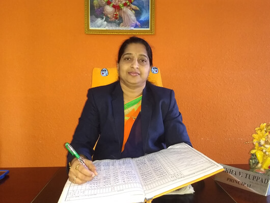
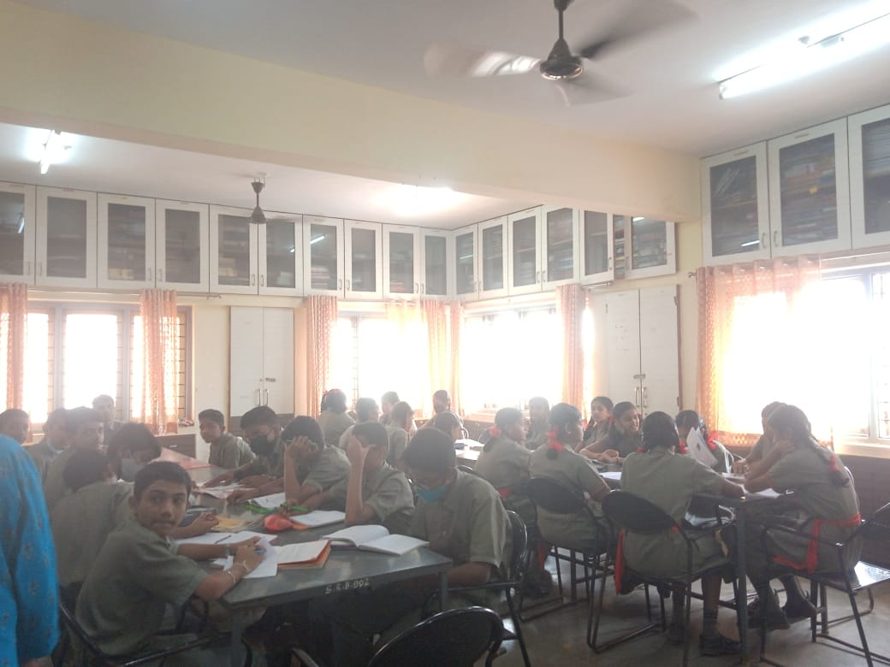
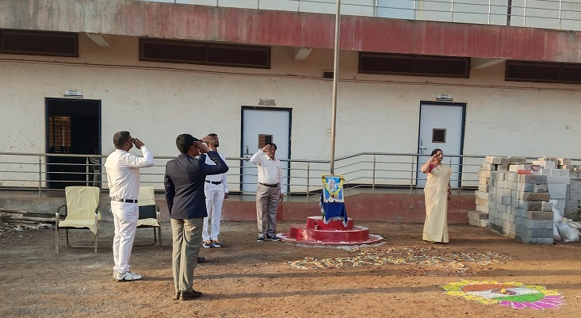
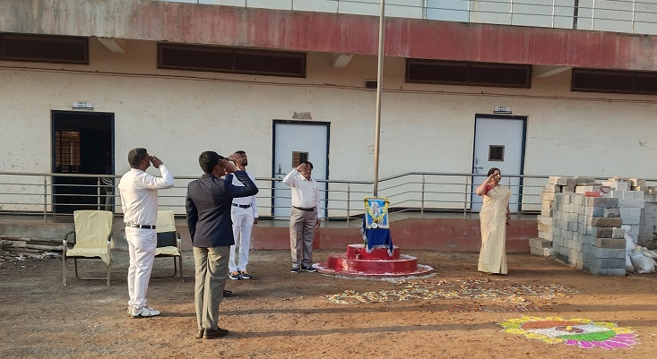

The Principal
Smt.Rekha Tuppad who has been handling the school since 2001. She has been handling the school very beautifully. She encourages the students in good things may it be Sports or study etc.Her qualifications are M.s.c.M.e.d.She has been posting a note in the School almanac every year which tells the student about Discipline,knowledge etc. She has been a very good Principal of all times.
INFRASTRUCTURE

Some of the topics in science are understood when practicals are done so it is important to have a science laboratory in school.It is the place where various kinds of practical works are carried out by the students. Without proper and well- equipped science laboratory, it is not possible to carry out the science teaching process effectively in any school or educational institution. Students learn to handle various apparatus and to think.
A library is an important source of knowledge to young minds in school. It develops the important habit of reading among the students… School library helps to impact positively on the academic achievements of the students.Students can also gather more inforamtion related to the syllabus. students will gather more information and acquire general knowledge by reading books.Also it has some comic books and mythology books.
EVENTS
 Yoga day

Republic day
Yoga day

Republic day
 Hindi diwas
Hindi diwas
This is beautiful video which has been done by Vedika Kabadi of 10th Batch 2022-2023.This video was done remembering the Beautiful memories of the school .